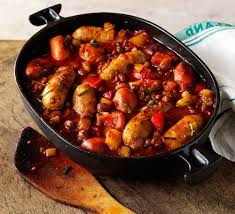

Home
Sausage Stew

Description
A sausage stew is a mix of sausages, fresh vegetables, and a rich tomato or stock-based sauce.
Ingredients
- Sausages
- Aromatics
- Vegetables
- Cooking Fat
Steps
- Heat the olive oil in a large pot or deep skillet over medium-high heat
- In the same pot, add the onion, carrots, and celery. Cook for 5–8 minutes until the onions start to soften
- Add the sliced sausages back into the pot along with the diced potatoes, canned tomatoes, beans, and stock. Bring to a boil, then reduce the heat to a simmer, cover, and cook for 25–30 minutes until the potatoes and carrots are tender
- Uncover for the last 5 minutes if you prefer a thicker sauce. Adjust seasoning with salt and pepper.